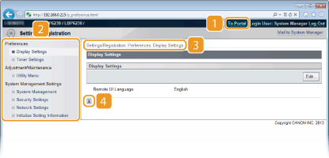

Remote UI Screens
This section describes the main screens of the Remote UI.
Portal Page (Main Page)
 [Log Out]
[Log Out]
Logs out from the Remote UI and returns to the log on page.
[Mail to System Manager]
Displays a window for creating an e-mail to the system manager. Contact information for the system manager is specified in [System Manager Information] under [System Management].
 Refresh Icon
Refresh Icon
Refreshes the current page.
 Device Basic Information
Device Basic Information
Displays the current status of the machine and error information. If an error has occurred, a link to the Error Information page is displayed.
 Support Link
Support Link
Displays a link to support information, as specified in [Device Information] under [System Management].
 [Status Monitor/Cancel]
[Status Monitor/Cancel]
Displays the [Status Monitor/Cancel] page. You can use this page to check the current printing status, cancel print processing, and view a history of print jobs.
 [Settings/Registration]
[Settings/Registration]
Displays the [Settings/Registration] page. When you are logged on in System Manager Mode, you can use this page to change machine settings. Changing Machine Settings
[Status Monitor/Cancel] Page
[To Portal]
Returns to the Portal Page (main page).
Menu
Click an item to display the content in the page on the right. Managing Documents and Checking the Machine Status
Breadcrumb trail
Indicates the series of pages you opened to display the current page. You can use this to check which page you are currently displaying.
Refresh Icon
Refreshes the current page.
Top Icon
Moves up to the top of the page when it has been scrolled out of view.
[Settings/Registration] Page

[To Portal]
Returns to the Portal Page (main page).
Menu
Click an item to display the content in the page on the right. Changing Machine Settings
Breadcrumb trail
Indicates the series of pages you opened to display the current page. You can use this to check which page you are currently displaying.
Top Icon
Moves up to the top of the page when it has been scrolled out of view.
|
|
About [System Management Settings]You can change system settings only when you have logged on in System Manager Mode.
When you have logged on in End-User Mode, only [System Management] is displayed.
|